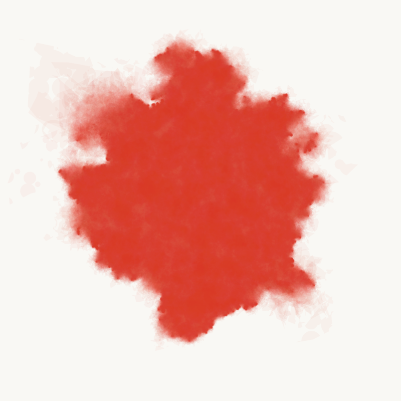
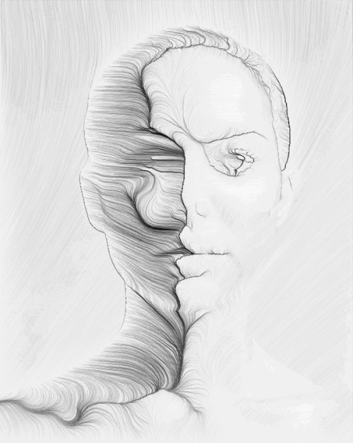
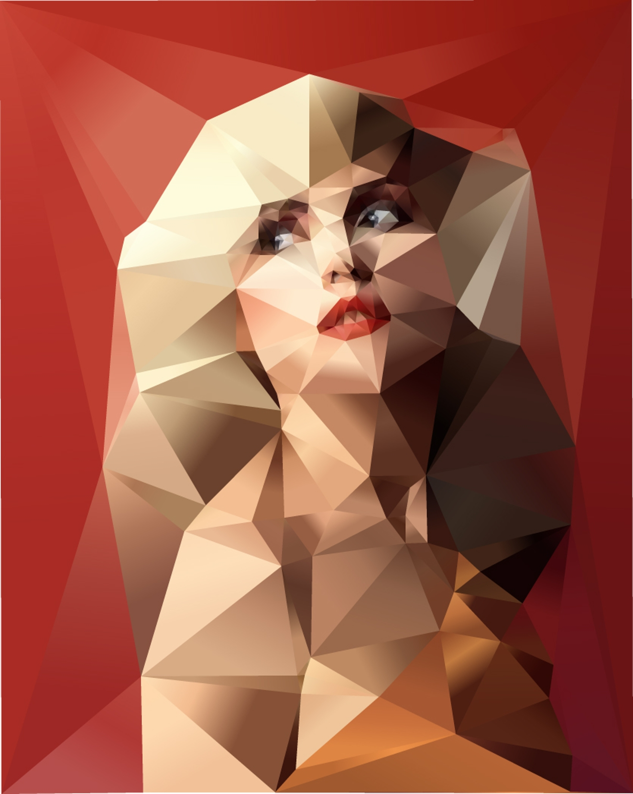

exercice 1: reproduire les designs suivants


- animer les visuels?
exercice 2 (spicy): reproduire les designs suivants
- Anders Hoff

how to : sand spline hint: shaping finction, coordonnées polaires - Tyler Hobbs

how to : watercolor hint: subdivision récursive et croissance différentielle - ou bien un ou plusieurs des trucs d'Alexis Andre
5 minutes pour regarder et arrêter un choix puis au boulot
exercice 3 (hot): reproduire un des designs suivants
- generate me

how to : curvature from noise
hint: ctx.getImageData, central difference, flow field, trails - Johnathan Puckey

how to : utiliser une triangulation delaunay
hint: accéder au contenu bitmap d'une image et sampler le centre des triangles pour obtenir la couleur de remplissage - refaire ça:
source à partir de ça:new york timelapse ou en local
hint: ctx.clip() - refaire ça:
source à partir de ça:Kinect Depth Test.m4v ou en local - les vidéos sont disponibles en local, au cas où vous voudriez les récupérer en ligne:
-
récupérer / installer FFMPEG
tékécharger depuis un aspirateur youtube
ou bien un aspirateur twitter
extraire des frames commande FFMPEG: ffmpeg -i input.mp4 -vf fps=1/2 out%d.png
exercice 4 (god-mode): reproduire ça.
- Raven Kwok
how to : GIT GUD !
hint: platonic solids, recursive subdivision, shaders, custom attributes, face normal, curl noise, barycentric coordinates